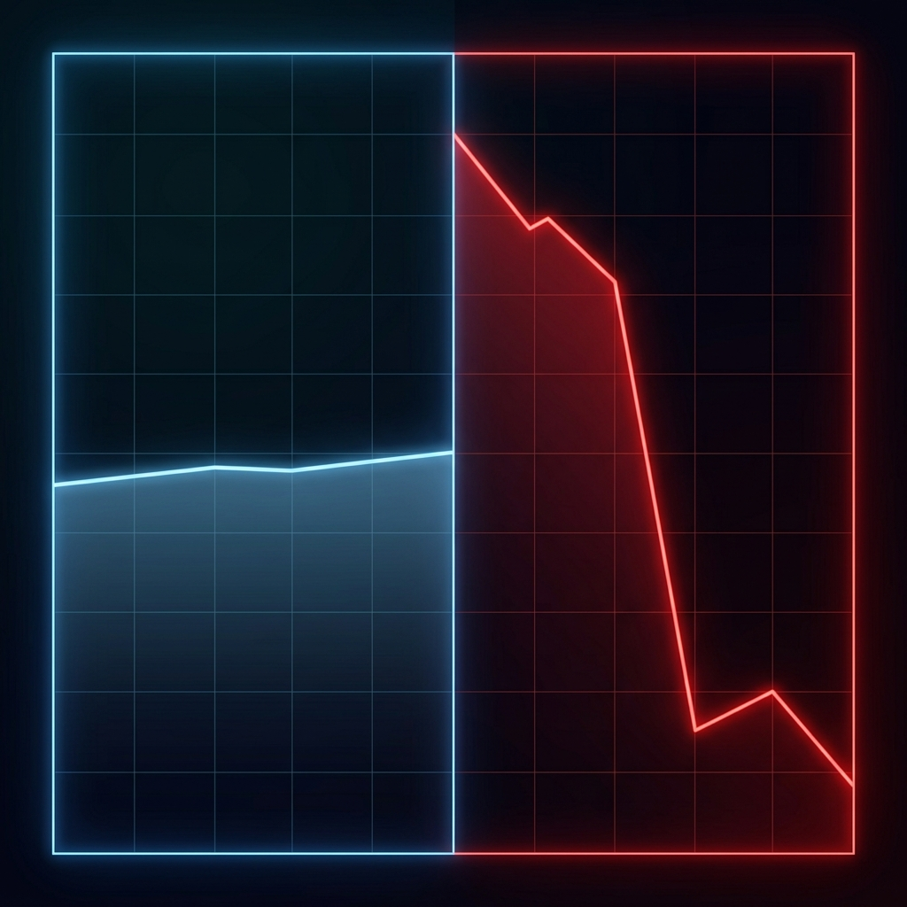

The presentation was polished. The chart showed a steep, dramatic upward slope. Someone said "the numbers speak for themselves" and the room nodded. A budget was approved. A strategy was locked in.
Six months later, the actual numbers came back and the growth that looked so extraordinary was, in absolute terms, a rounding error. The chart had not been falsified. Every data point was accurate. But the way those data points were displayed had created a visual impression that bore almost no relationship to the underlying reality.
This is how most misleading charts work. Not through fabrication, but through framing. The data is real. The lie is in the design.
Misleading visualizations are not a niche concern for statisticians. They routinely drive business decisions, shape public policy, and distort organizational strategy. Understanding the most common techniques and the cognitive science behind why they work is a core literacy skill for anyone who reads, makes, or acts on data.
Lie #1: The Truncated Y-Axis
A bar chart or line graph where the vertical axis begins at, say, 78 instead of 0. Two bars that are actually 78% and 82%, a 4-percentage-point difference, visually appear as one bar being four or five times taller than the other.
This is the single most documented misleading chart technique in the academic literature. A landmark study by Pandey, Rall, Satterthwaite, Nov, and Bertini, published at IEEE VIS 2015, tested truncated Y-axes experimentally using controlled groups. Participants consistently overestimated the magnitude of differences shown in truncated charts by a factor of 3 to 5 even when they were explicitly instructed to examine the axes carefully before interpreting the chart.
The underlying cognitive mechanism was explained by Stephen Few in Show Me the Numbers (2004) and confirmed by eye-tracking research: viewers first form a holistic gestalt impression of the chart, the overall "shape", before reading specific numbers. This impression is dominated by the visual ratio of bar heights or line slopes, not by the axis scale. By the time the viewer reads the axis, the initial impression has already anchored their interpretation.

Always check where the Y-axis starts. If a bar chart does not begin at zero, ask why. For line charts, check whether the range shown is proportionate to the total possible range of the metric. A stock price chart showing one day's trading is legitimately not zero-based; a bar chart comparing regional sales figures almost always should be.
Lie #2: The Cumulative Graph That Never Goes Down
A cumulative graph sums every previous period's value into the current one. By mathematical definition, it can never decrease as long as any positive value is being added. Even a business in sharp decline will show an upward-sloping cumulative revenue chart because past revenues continue to accumulate.
This technique is pervasive in startup pitch decks, marketing reports, and political communications. A company whose monthly new user signups have been declining for six months straight can present a chart of "total users ever" that still trends confidently upward. The chart is arithmetically correct. The story it implies, that the business is growing, is false.
Alberto Cairo, professor of visual journalism at the University of Miami and author of How Charts Lie (2019), documents this pattern extensively. He distinguishes between charts that are "truthful but misleading" technically accurate but designed to lead viewers toward incorrect conclusions and outright fabrications. Cumulative charts, he argues, are among the most insidious of the former category because they are so difficult to challenge: "Every number on the chart is correct."
The COVID-19 pandemic provided a real-world case study in this effect at scale. Early in the pandemic, cumulative case counts were widely displayed in media dashboards. These charts created visual impressions of acceleration even during periods when the daily rate of new cases was declining significantly. Epidemiologists use the daily rate (or 7-day rolling average) as the operationally meaningful metric; cumulative totals, by their nature, cannot reflect improving conditions. Multiple researchers, including Carl Bergstrom and Jevin West (Calling Bullshit, 2020), highlighted this specific confusion as a contributor to public misunderstanding of the pandemic's trajectory.
When you see a chart that curves smoothly and continuously upward with no dips, ask: "Is this cumulative or periodic?" The words "total," "all-time," or "since launch" are signals you may be looking at a cumulative metric. Request the periodic view (weekly, monthly, or daily) before drawing any conclusion about trend direction.
Lie #3: The Convenient Baseline
A chart of stock performance "since our IPO" that happens to start on the day of a market-wide crash. A chart of crime rates that begins the year a new policy took effect which happened to follow an unusually high year. Any trend line can be made to look like improvement or decline depending on where it starts.
Edward Tufte, the Yale statistician widely regarded as the leading authority on data visualization, named this problem "cherry-picking temporal baselines" in The Visual Display of Quantitative Information (1983), still the foundational text in the field. His principle of "data-ink ratio" and his concept of "chartjunk" both address the tendency of charts to guide interpretation through selective framing rather than honest presentation.
A well-documented real-world example: after the passage of the Affordable Care Act in the United States, both proponents and opponents of the law published charts showing the direction of insurance coverage rates using start dates that either included or excluded years favorable to their argument. The same underlying dataset was used to support directly contradictory conclusions, published in reputable outlets, simply by adjusting the horizontal axis start point.
Ask for the longest available time series. If the presenter can only show a specific window, find out why. Look for discontinuities or context missing immediately before the chart starts; high anomalies, policy changes, or market events that would change the interpretation of the trend.
Lie #4: The Dual-Axis Deception
A chart with two lines moving together, one tracking ice cream sales, one tracking drowning incidents. Or revenue plotted on the left axis against customer satisfaction on the right, with both axes scaled so the lines cross at just the right moment to imply causation. By independently scaling each axis, the chart designer can make any two datasets appear to move in lockstep.
The website Spurious Correlations (Tyler Vigen, 2015) built an entire book and data project on this concept, demonstrating that the per-capita cheese consumption in the United States correlates at r=0.95 with the number of people who died by becoming tangled in their bedsheets over a 10-year period. The correlation is statistically real. The implication that cheese causes bedsheet fatalities is absurd. Dual-axis charts routinely manufacture the same false impression of meaningful correlation from coincidental co-movement.
A study by Kong, Hearst, and Agrawala at UC Berkeley (ACM CHI 2019) experimentally confirmed that dual-axis line charts reliably cause viewers to infer causal relationships between metrics that share no actual connection. The visual proximity of two lines moving together overrides analytical skepticism.
Whenever you see two lines on different Y-axes moving together, ask: "What happens if I rescale one axis?" If the correlation disappears when the axes are independently rescaled, the visual relationship was a design artifact. Also ask: is there a plausible causal or mechanistic reason these two metrics would actually be related?
Lie #5: The 3D Chart That Distorts Everything
A 3D pie chart where the slice "closest" to the viewer appears larger than it actually is due to perspective projection. A 3D bar chart where depth and angle cause bars of equal height to appear different. The visual rendering of three-dimensional objects on a flat screen introduces systematic distortions in perceived size and proportion.
This problem was first rigorously quantified by Cleveland and McGill in a foundational 1984 paper in the Journal of the American Statistical Association still cited in visualization research today. They established a perceptual hierarchy of chart types from most to least accurate for conveying quantitative differences. 3D charts perform at the bottom of the hierarchy consistently, because the rendering process introduces non-linear distortions that viewers cannot intuitively compensate for.
Tufte's verdict in The Visual Display of Quantitative Information was characteristically direct: "The only worse design than a pie chart is several of them, and the only worse design than a pie chart is a three-dimensional one." The academic consensus on 3D charts is effectively unanimous: they add visual complexity while reducing accuracy. They exist almost exclusively for aesthetic reasons which is precisely why they persist in corporate presentations.
If a chart is three-dimensional, rotate it mentally to a flat 2D view and ask if the proportions still appear the same. For 3D pie charts: can you accurately rank the slices by size? If not, the chart is failing at its core purpose. Request a flat bar chart or table as an alternative. They are always more readable and accurate.
Lie #6: The Misleading Pictograph
A chart comparing two values, say $10 vs. $20, uses a small coin icon and a large coin icon. The large icon is drawn twice as tall to represent twice the value. But because the icon scales in both height and width, it is actually four times the visual area. The viewer perceives a 4x difference from a 2x reality.
This is known as the "area encoding error" and it is extensively documented in the visualization literature. Cairo covers it in detail in How Charts Lie, noting that the human visual system judges size by area, not by a single linear dimension. When icons are scaled proportionally in 2D to represent 1D numerical differences, the result is systematic overestimation of the actual difference typically by the square of the true ratio.
Pictographs are disproportionately common in news media and marketing because they are visually engaging. A 2017 study by Skau and Kosara (IEEE VIS) confirmed that area-scaled pictographs cause larger estimation errors than any other common chart type including 3D pie charts precisely because their visual appeal reduces the skepticism that might prompt viewers to check the axis.
When icons are used to represent quantities, check whether they scale in one dimension (height only) or two (height and width). If two-dimensional icons are used, mentally convert to a bar chart and re-read the comparison. Icons should either be identical in size (with numbers doing the work) or scaled only in one direction.
The Cognitive Science of Why Charts Fool Us
Understanding why these techniques work is as important as recognizing them. They are not bugs in human cognition, they exploit features of how visual information processing works.
Pre-attentive processing. Psychologists and neuroscientists have established that certain visual features length, color, angle, area are processed before conscious attention is deployed. This "pre-attentive" processing creates impressions that are formed in under 250 milliseconds, before the viewer has read a single number. Chart designs that exploit pre-attentive processing by making a visual impression that contradicts the actual data create impressions that are extremely resistant to correction even after careful reading.
Anchoring. The first number or visual impression encountered anchors all subsequent interpretation. In a truncated bar chart, the visual ratio of bar heights anchors the perceived magnitude of difference. Even if the viewer subsequently reads the actual values and notes the axis truncation, research by Tversky and Kahneman (1974, Science) shows that initial anchors continue to bias final judgments.
Confirmation bias in visual form. If the viewer is already inclined to believe the story the chart tells (e.g., a rising stock, a falling crime rate), they will invest less scrutiny in the chart's design. Misleading charts are most effective when they confirm what the audience wants to hear.
A Field Guide: Questions to Ask Before Trusting Any Chart
- Where does the Y-axis start? If not at zero, is there a legitimate reason and does the chart clearly communicate this?
- Is this metric cumulative or periodic? Cumulative graphs look different from periodic ones. The periodic view is almost always more operationally meaningful.
- Why does the time window start here? What happened immediately before this chart begins? Could a different start date change the apparent story?
- Are there two Y-axes? If so, what happens when you rescale one? Is there a mechanistic reason to expect these metrics to move together?
- Is this a 3D chart? If yes, request a flat alternative. There is no analytic justification for a 3D chart that cannot be served more accurately by a 2D one.
- What is missing from this chart? Error bars, confidence intervals, sample sizes, comparison benchmarks. Absent context shapes interpretation just as powerfully as present context.
- Who made this chart and what do they want me to believe? This is not cynicism. It is critical reading. The incentives of the chart's creator are always part of the interpretive context.
The Honest Chart: What Right Looks Like
None of this means charts are untrustworthy as a medium. Visualizations, when designed with honesty, are among the most powerful tools for communicating quantitative relationships. The work of statisticians like Florence Nightingale, whose 1858 polar area diagrams persuaded the British Army to reform hospital sanitation, demonstrates that a well-designed chart can communicate life-saving truths more effectively than any written report.
The principles of honest visualization are not complicated. They were articulated by Tufte in 1983 and have been elaborated by Cairo, Few, and others since:
- Show the full data range where context demands it
- Label all axes clearly, including their units and starting values
- Use the simplest chart type that accurately represents the relationship
- Include uncertainty (error bars, confidence intervals, sample size) where it is material
- Show the comparison that is actually relevant to the decision being made
- Never add visual dimensions that do not represent actual data dimensions
The Bottom Line
Charts lie not because data lies, but because design choices (axis ranges, time windows, dimensional rendering, metric selection) create visual impressions that diverge from quantitative reality. These choices are sometimes deliberate and sometimes careless, but their effect on the viewer is the same: a confident, false conclusion reached before the first number is consciously read.
The antidote is not distrust of visualization. It is visual literacy. The habit of asking, for every chart, what the design choices are, why they were made, and what a different set of choices would show. The chart that looked great might genuinely reflect a great result. Or it might be the most expensive slide in the room.
Learning to tell the difference is not optional for anyone whose decisions depend on data. Which is, increasingly, everyone.